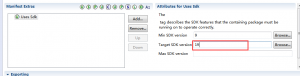
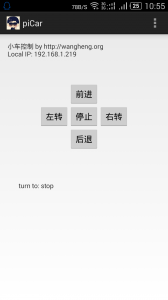

上篇文章 之后，继续折腾我的小车，又用C#和Android 写了两个控制客户端。
思路比较直接，使用POST请求去发送小车转向参数，然后就动起来了。C#不说了，很熟练写起来也非常简单，使用钩子捕获全局键盘，这样及时程序不在前台也能控制小车。
核心代码如下：
using System;
using System.Collections.Generic;
using System.ComponentModel;
using System.Data;
using System.Diagnostics;
using System.Drawing;
using System.IO;
using System.Linq;
using System.Net;
using System.Net.Security;
using System.Runtime.InteropServices;
using System.Text;
using System.Windows.Forms;
namespace WangHeng.Org.PiCar
{
public partial class MainFrm : Form
{
public MainFrm()
{
InitializeComponent();
InitControl();
KeyHookUtils.Hook_Start();
}
private void InitControl()
{
this.StartPosition = FormStartPosition.CenterScreen;
this.Text = "PiCar Control v" + this.ProductVersion;
this.MaximizeBox = false;
this.MinimizeBox = true;
this.FormBorderStyle = System.Windows.Forms.FormBorderStyle.FixedSingle;
this.btnDown.Tag = "t_down";
this.btnLeft.Tag = "t_left";
this.btnRight.Tag = "t_right";
this.btnUp.Tag = "t_up";
this.btnStop.Tag = "t_stop";
this.statusStrip1.SizingGrip = false;
this.lblPostResultInfo.Text = "启动成功！";
}
protected override bool ProcessDialogKey(Keys keyData)
{
if (keyData == Keys.Left)
{
lblPostResultInfo.Text = "left";
}
return base.ProcessDialogKey(keyData);
}
private void ctlButton_Click(object sender, EventArgs e)
{
var btn = sender as Button;
var result = CarCtl.TurnFunc(btn.Tag.ToString());
this.lblPostResultInfo.Text = "请求成功 - " + result;
}
}
public static class CarCtl
{
public enum CarStatus
{
Left,
Right,
Up,
Down,
Stop,
Unknown
}
public static CarStatus CurrentStatus = CarStatus.Unknown;
public static string TurnFunc(string direcID)
{
try
{
var requestUrl = "http://192.168.1.171:2000/ctl";
var requestData = new Dictionary<string, string>() { { "id", direcID } };
var requestUserAgent = "WangHeng PiCar/v1.0";
var requestEncoding = Encoding.Default;
var result = HttpUtility.CreatePostHttpResponse(
requestUrl,
requestData,
5000,
requestUserAgent,
requestEncoding,
null);
using (var sr = new StreamReader(result.GetResponseStream(), requestEncoding))
{
return sr.ReadToEnd();
}
}
catch (Exception ex)
{
return null;
}
}
}
public class KeyHookUtils
{
[StructLayout(LayoutKind.Sequential)]
public class KeyBoardHookStruct
{
public int vkCode;
public int scanCode;
public int flags;
public int time;
public int dwExtraInfo;
}
//委托
public delegate int HookProc(int nCode, int wParam, IntPtr lParam);
static int hHook = 0;
public const int WH_KEYBOARD_LL = 13;
//LowLevel键盘截获，如果是WH_KEYBOARD＝2，并不能对系统键盘截取，Acrobat Reader会在你截取之前获得键盘。
static HookProc KeyBoardHookProcedure;
//设置钩子
[DllImport("user32.dll")]
public static extern int SetWindowsHookEx(int idHook, HookProc lpfn, IntPtr hInstance, int threadId);
//抽掉钩子
[DllImport("user32.dll", CharSet = CharSet.Auto, CallingConvention = CallingConvention.StdCall)]
public static extern bool UnhookWindowsHookEx(int idHook);
//调用下一个钩子
[DllImport("user32.dll")]
public static extern int CallNextHookEx(int idHook, int nCode, int wParam, IntPtr lParam);
[DllImport("kernel32.dll")]
public static extern int GetCurrentThreadId();
[DllImport("kernel32.dll")]
public static extern IntPtr GetModuleHandle(string name);
public static void Hook_Start()
{
if (hHook == 0)
{
KeyBoardHookProcedure = new HookProc(KeyBoardHookProc);
hHook = SetWindowsHookEx(WH_KEYBOARD_LL, KeyBoardHookProcedure,
GetModuleHandle(Process.GetCurrentProcess().MainModule.ModuleName), 0);
//如果设置钩子失败.
if (hHook == 0)
{
Hook_Clear();
}
}
}
/// <summary>
/// 取消钩子事件
/// </summary>
public static void Hook_Clear()
{
bool retKeyboard = true;
if (hHook != 0)
{
retKeyboard = UnhookWindowsHookEx(hHook);
hHook = 0;
}
}
public static int KeyBoardHookProc(int nCode, int wParam, IntPtr lParam)
{
if (nCode >= 0)
{
KeyBoardHookStruct kbh = (KeyBoardHookStruct)Marshal.PtrToStructure(lParam, typeof(KeyBoardHookStruct));
Keys k = (Keys)Enum.Parse(typeof(Keys), kbh.vkCode.ToString());
switch (k)
{
case Keys.Left:
if (kbh.flags == 1)
{
// 这里写按下后做什么事
if (CarCtl.CurrentStatus != CarCtl.CarStatus.Up)
{
CarCtl.TurnFunc("t_left");
CarCtl.CurrentStatus = CarCtl.CarStatus.Up;
}
}
else if (kbh.flags == 129)
{
//放开后做什么事
CarCtl.TurnFunc("t_stop");
CarCtl.CurrentStatus = CarCtl.CarStatus.Stop;
}
return 1;
case Keys.Up:
if (kbh.flags == 1)
{
// 这里写按下后做什么事
if (CarCtl.CurrentStatus != CarCtl.CarStatus.Up)
{
CarCtl.TurnFunc("t_up");
CarCtl.CurrentStatus = CarCtl.CarStatus.Up;
}
}
else if (kbh.flags == 129)
{
//放开后做什么事
CarCtl.TurnFunc("t_stop");
CarCtl.CurrentStatus = CarCtl.CarStatus.Stop;
}
return 1;
case Keys.Right:
if (kbh.flags == 1)
{
if (CarCtl.CurrentStatus != CarCtl.CarStatus.Up)
{
CarCtl.TurnFunc("t_right");
CarCtl.CurrentStatus = CarCtl.CarStatus.Up;
}
}
else if (kbh.flags == 129)
{
//放开后做什么事
CarCtl.TurnFunc("t_stop");
CarCtl.CurrentStatus = CarCtl.CarStatus.Stop;
}
return 1;
case Keys.Down:
if (kbh.flags == 1)
{
if (CarCtl.CurrentStatus != CarCtl.CarStatus.Up)
{
CarCtl.TurnFunc("t_down");
CarCtl.CurrentStatus = CarCtl.CarStatus.Up;
}
}
else if (kbh.flags == 129)
{
//放开后做什么事
CarCtl.TurnFunc("t_stop");
CarCtl.CurrentStatus = CarCtl.CarStatus.Stop;
}
return 1;
default:
break;
}
}
return CallNextHookEx(hHook, nCode, wParam, lParam);
}
}
}
这里主要说一下Android 的客户端
Android之前虽没怎么接触过，但凭着自己一些基础，还是慢慢摸索到了门路。唯一比较坑的是，在获取Wifi权限的时候，照着网上的介绍改了AndroidManifest.xml 加入
<uses-permission android:name="android.permission.ACCESS_WIFI_STATE"/>
<uses-permission android:name="android.permission.INTERNET"/>
<uses-permission android:name="android.permission.WAKE_LOCK"/>
<uses-permission android:name="android.permission.CHANGE_WIFI_STATE"/>
<uses-permission android:name="android.permission.ACCESS_NETWORK_STATE"/>
依然没有访问网络的权限 :(
为此还特意加了几个Android的开发群，但是群里一个个爱答不理，趾高气扬的态度，我就呵呵了。果断退群，还是得靠自己，扶梯子上Google，一顿搜搜搜，果然有同病相怜的朋友。
原因竟然是一个小问题目标SDK版本不对。。。好吧，果然弱爆了。
{kind=link}

按上图将Target SDK Version 从18改成19，运行，测试，这次果然可以了。如下：
{kind=link}

代码也比较简单，核心代码如下：
package com.apiof.picar;
import java.io.BufferedReader;
import java.io.IOException;
import java.io.InputStreamReader;
import java.net.HttpURLConnection;
import java.net.InetAddress;
import java.net.MalformedURLException;
import java.net.NetworkInterface;
import java.net.SocketException;
import java.net.URL;
import java.util.Enumeration;
import java.util.HashMap;
import java.util.Map;
import android.net.wifi.WifiInfo;
import android.net.wifi.WifiManager;
import android.os.Bundle;
import android.os.StrictMode;
import android.app.Activity;
import android.app.AlertDialog;
import android.content.Context;
import android.content.DialogInterface;
import android.util.Log;
import android.view.KeyEvent;
import android.view.Menu;
import android.view.View;
import android.view.WindowManager;
import android.widget.Button;
import android.widget.TextView;
import android.widget.Toast;
import android.view.View.OnClickListener;
public class MainActivity extends Activity {
@Override
protected void onCreate(Bundle savedInstanceState) {
super.onCreate(savedInstanceState);
setContentView(R.layout.activity_main);
// 禁止屏幕锁屏，也可以用View.setKeepScreenOn(boolean)来实现
getWindow().addFlags(WindowManager.LayoutParams.FLAG_KEEP_SCREEN_ON);
InitHandler();
TestNetWork();
}
public void DisplayToast(String str)
{
Toast.makeText(this, str, Toast.LENGTH_SHORT).show();
}
public boolean onKeyDown(int KeyCode, KeyEvent event) {
switch (KeyCode) {
case KeyEvent.KEYCODE_0:
DisplayToast("按下数字0");
break;
}
return super.onKeyDown(KeyCode, event);
}
@Override
public boolean onKeyUp(int keyCode,KeyEvent event){
switch(keyCode){
case KeyEvent.KEYCODE_0:
DisplayToast("松开数字0");
break;
}
return super.onKeyUp(keyCode, event);
}
public void TestNetWork() {
String strUrl = "http://nas.apiof.com:2000";
StrictMode.setThreadPolicy(new StrictMode.ThreadPolicy.Builder()
.detectDiskReads().detectDiskWrites().detectNetwork()
.penaltyLog().build());
URL url = null;
try {
url = new URL(strUrl);
System.out.println(url.getPort());
HttpURLConnection urlConn = (HttpURLConnection) url
.openConnection();
InputStreamReader in = new InputStreamReader(
urlConn.getInputStream());
BufferedReader br = new BufferedReader(in);
String result = "";
String readerLine = null;
while ((readerLine = br.readLine()) != null) {
result += readerLine;
}
in.close();
urlConn.disconnect();
System.out.println("r:" + result);
TextView textView = (TextView) this.findViewById(R.id.textView2);
textView.setText(result);
} catch (MalformedURLException e) {
// TODO Auto-generated catch block
e.printStackTrace();
} catch (IOException e) {
// TODO Auto-generated catch block
e.printStackTrace();
}
}
@Override
public void onBackPressed() {
new AlertDialog.Builder(this).setTitle("确认退出吗？")
.setIcon(android.R.drawable.ic_dialog_info)
.setPositiveButton("确定", new DialogInterface.OnClickListener() {
@Override
public void onClick(DialogInterface dialog, int which) {
// 点击“确认”后的操作
MainActivity.this.finish();
}
})
.setNegativeButton("返回", new DialogInterface.OnClickListener() {
@Override
public void onClick(DialogInterface dialog, int which) {
// 点击“返回”后的操作,这里不设置没有任何操作
}
}).show();
}
@Override
public boolean onCreateOptionsMenu(Menu menu) {
// Inflate the menu; this adds items to the action bar if it is present.
getMenuInflater().inflate(R.menu.main, menu);
return true;
}
private String intToIp(int i) {
return (i & 0xFF) + "." + ((i >> 8) & 0xFF) + "." + ((i >> 16) & 0xFF)
+ "." + (i >> 24 & 0xFF);
}
public String getLocalIpAddress() {
try {
for (Enumeration<NetworkInterface> en = NetworkInterface
.getNetworkInterfaces(); en.hasMoreElements();) {
NetworkInterface intf = en.nextElement();
for (Enumeration<InetAddress> enumIpAddr = intf
.getInetAddresses(); enumIpAddr.hasMoreElements();) {
InetAddress inetAddress = enumIpAddr.nextElement();
if (!inetAddress.isLoopbackAddress()) {
return inetAddress.getHostAddress().toString();
}
}
}
} catch (SocketException ex) {
Log.e("WifiPreference IpAddress", ex.toString());
}
return null;
}
public void InitHandler() {
// 获取wifi服务
WifiManager wifiManager = (WifiManager) getSystemService(Context.WIFI_SERVICE);
// 判断wifi是否开启
if (!wifiManager.isWifiEnabled()) {
wifiManager.setWifiEnabled(true);
}
WifiInfo wifiInfo = wifiManager.getConnectionInfo();
int ipAddress = wifiInfo.getIpAddress();
String ip = intToIp(ipAddress);
TextView txt1 = (TextView) findViewById(R.id.textView1);
txt1.setText(txt1.getText() + "\r\nLocal IP: " + ip);
((Button)findViewById(R.id.btnStop)).setOnClickListener(stopHandler);
((Button)findViewById(R.id.btnForward)).setOnClickListener(upHandler);
((Button)findViewById(R.id.btnBackward)).setOnClickListener(downHandler);
((Button)findViewById(R.id.btnTurnLeft)).setOnClickListener(leftHandler);
((Button)findViewById(R.id.btnTurnRight)).setOnClickListener(rightHandler);
}
private void Trun(String id) {
TextView txt = (TextView) findViewById(R.id.textView2);
try {
String requestUrl = "http://192.168.1.171:2000/ctl";
Map<String, String> requestParams = new HashMap<String, String>();
requestParams.put("id", id);
String result = HttpUtils.submitPostData(requestUrl,
requestParams, "utf-8");
txt.setText("turn to: "+result);
} catch (Throwable e) {
e.printStackTrace();
}
}
private OnClickListener stopHandler=new OnClickListener() {
public void onClick(View v) {
Trun("t_stop");
}
};
private OnClickListener leftHandler=new OnClickListener() {
public void onClick(View v) {
Trun("t_left");
}
};
private OnClickListener rightHandler=new OnClickListener() {
public void onClick(View v) {
Trun("t_right");
}
};
private OnClickListener upHandler=new OnClickListener() {
public void onClick(View v) {
Trun("t_up");
}
};
private OnClickListener downHandler=new OnClickListener() {
public void onClick(View v) {
Trun("t_down");
}
};
}
完整的代码放到了我的Github 共享，需要的朋友可以参考下载：
https://github.com/wujiwh/piCar/tree/master/client/android